Change Your Website Photos — Do It Yourself
Every photo on the site is a file inside the images folder next to this guide. To change a photo anywhere on the site, replace the file and re-upload the folder. No code, ever.
The 3 steps
1. Replace the file. Pick your new photo, rename it to exactly the filename from the table below (e.g. hero.jpg), and drop it into the images folder — replacing the old one. Keep it a .jpg.
2. Go to Netlify. Log in at app.netlify.com, open your project (storied-marshmallow-cd0759), and find the box that says "Drag and drop your project folder here to deploy new changes."
3. Drag this whole folder (the one containing this guide, the .html files, and the images folder) onto that box. Wait ~20 seconds. Your site is updated.
Which file is which photo
| Current photo | Filename to use | Where it appears on the site | Best size |
|---|
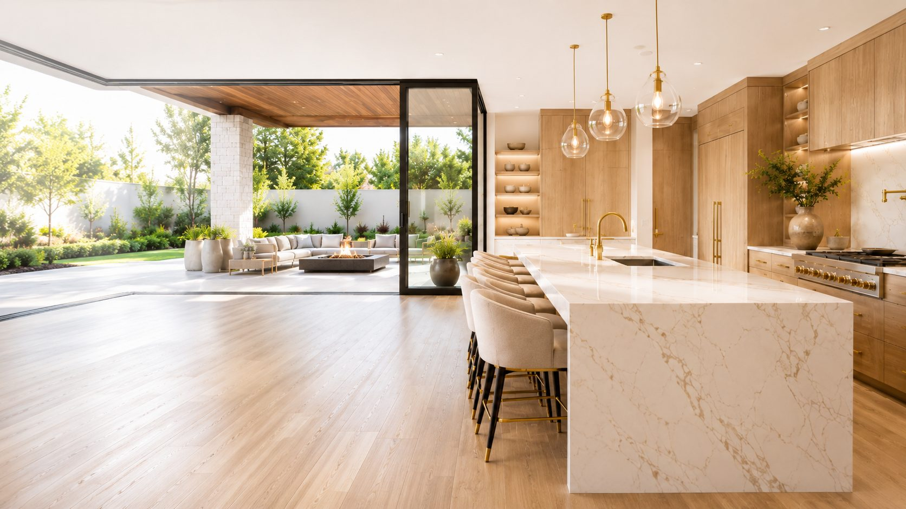 | hero.jpg | Homepage — big hero background (kitchen photo) | wide, at least 1900px |
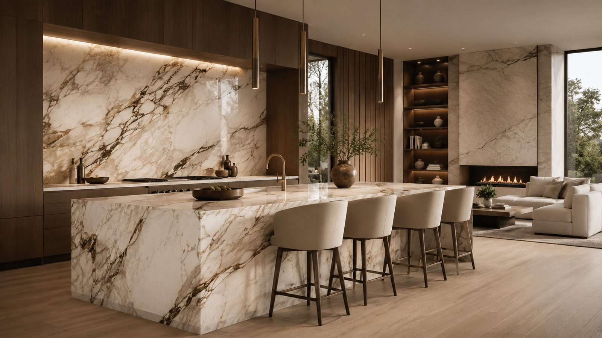 | marble-kitchen.jpg | Homepage About section + Kitchen Remodeling Palo Alto page + Design mood board | wide, ~1600px |
 | renan.jpg | About page portrait + team circle on Home & About | square-ish portrait, ~900px |
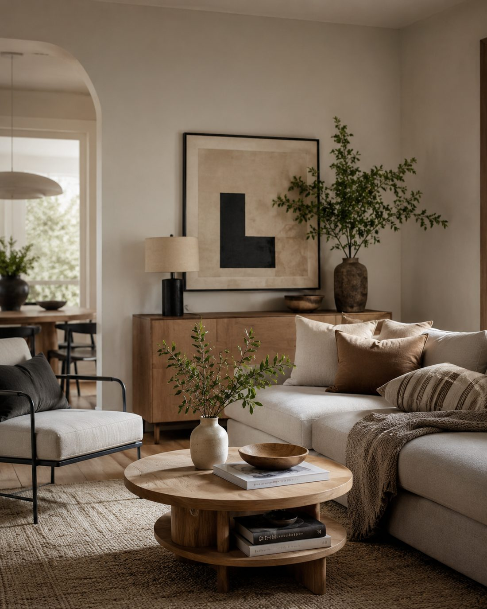 | mood-living.jpg | Design page — mood board #1 (living room) | portrait, ~1100px |
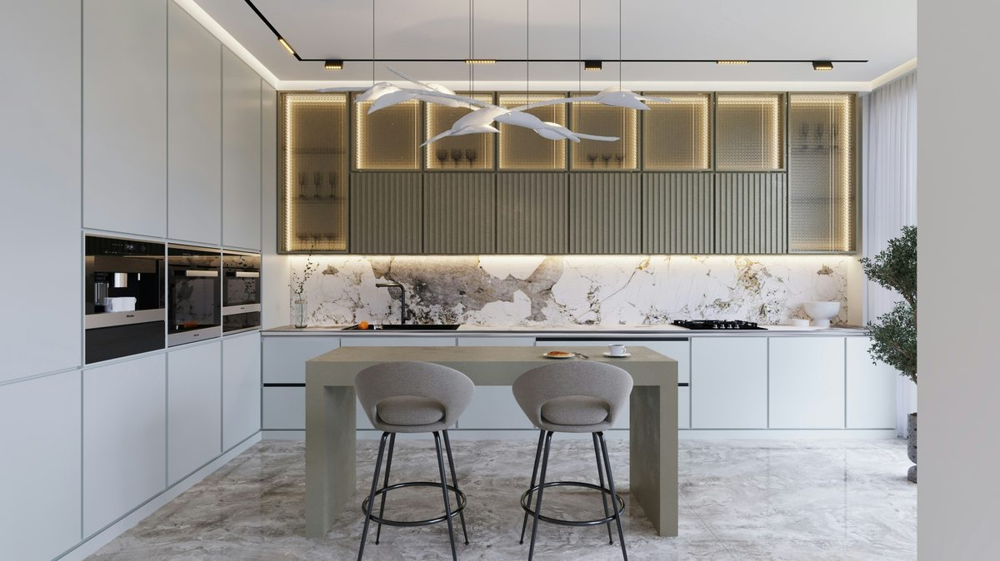 | mood-kitchen-white.jpg | Design page — mood board #2 | any, ~1200px |
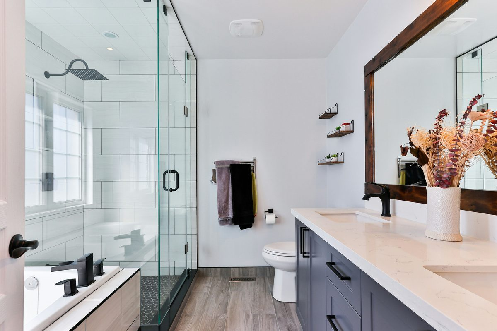 | mood-bath-white.jpg | Design page — mood board #3 | any, ~1200px |
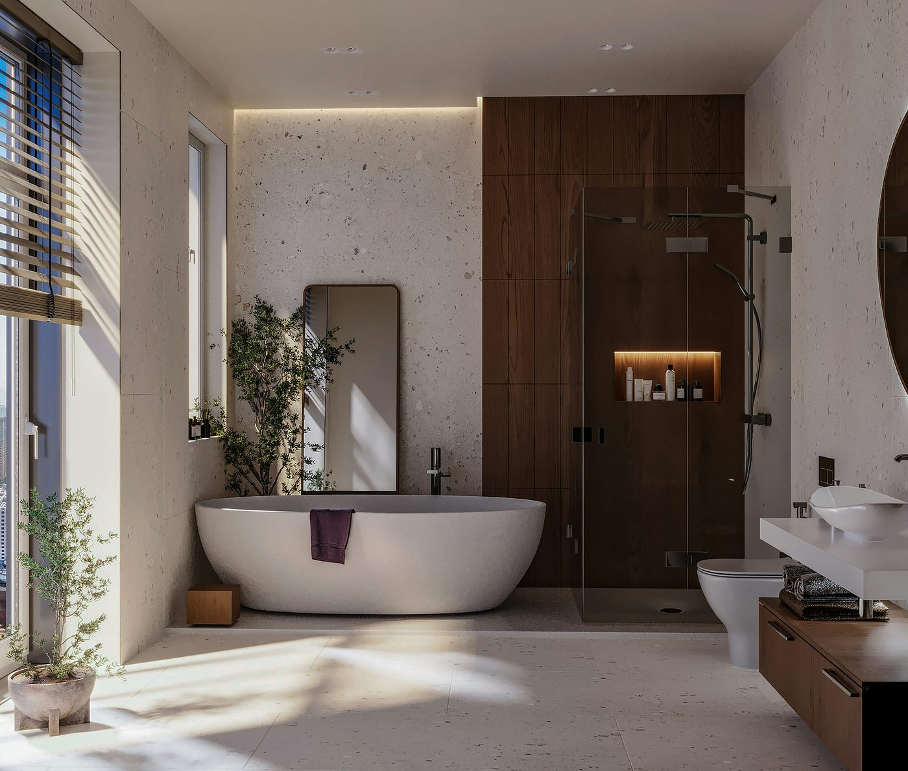 | bath-luxury.jpg | Design mood board #4 + Bathroom Remodeling San Jose page | wide, ~1400px |
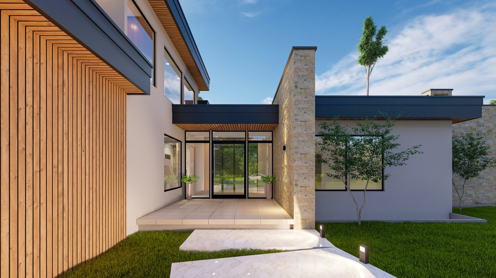 | adu-exterior.jpg | Design mood board #6 + ADU Builder San Jose page | wide, ~1500px |
 | src-tile.jpg | Sourcing page — Tile & Natural Stone card | wide, ~1200px |
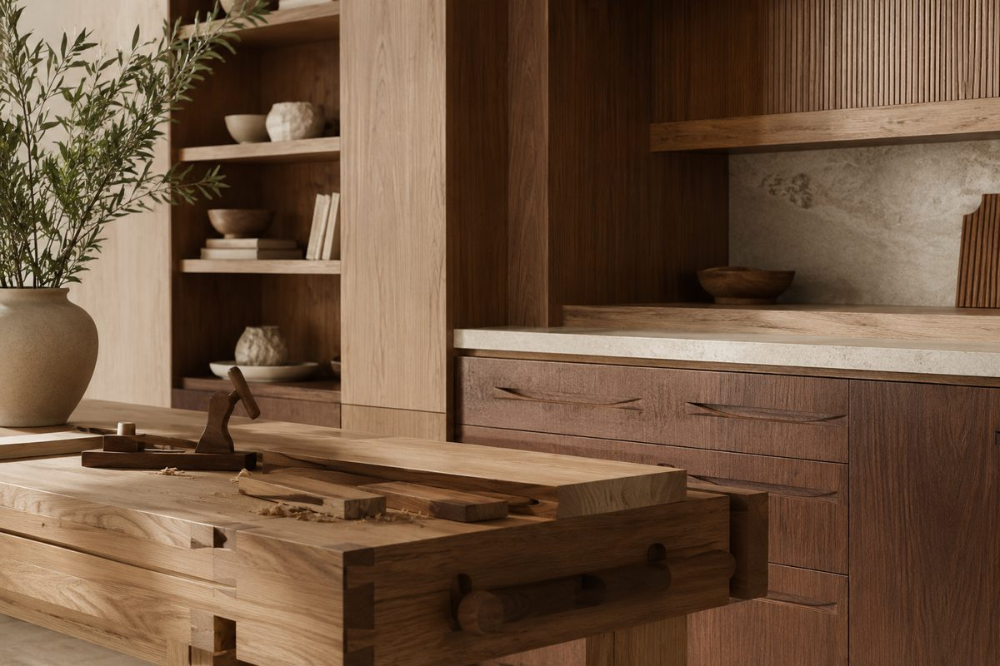 | src-cabinetry.jpg | Sourcing page — Cabinetry & Wood Work card | wide, ~1200px |
 | src-fixtures.jpg | Sourcing page — Bath & Kitchen Fixtures card | wide, ~1200px |
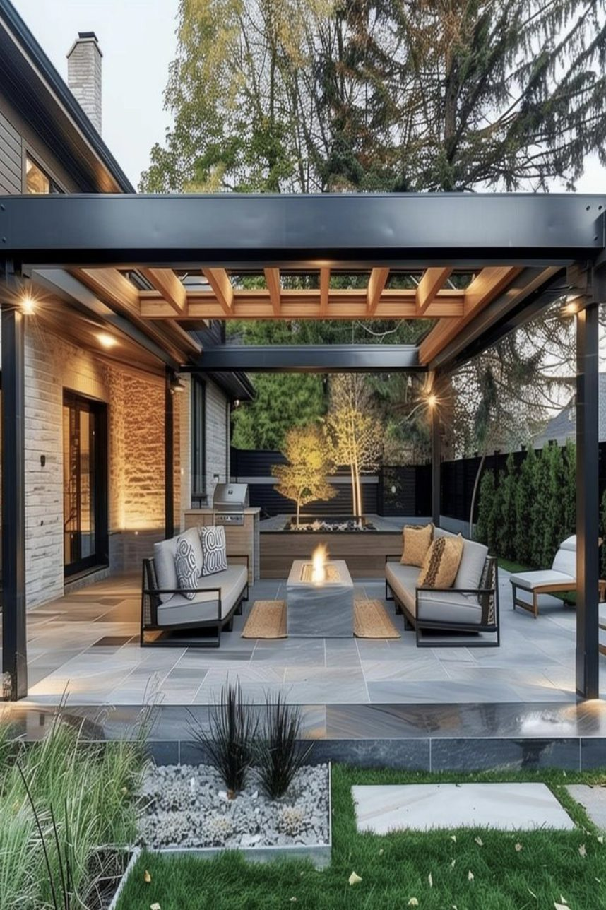 | land-pergola.jpg | Landscape page — gallery photo 1 (pergola) | portrait ok, ~900px |
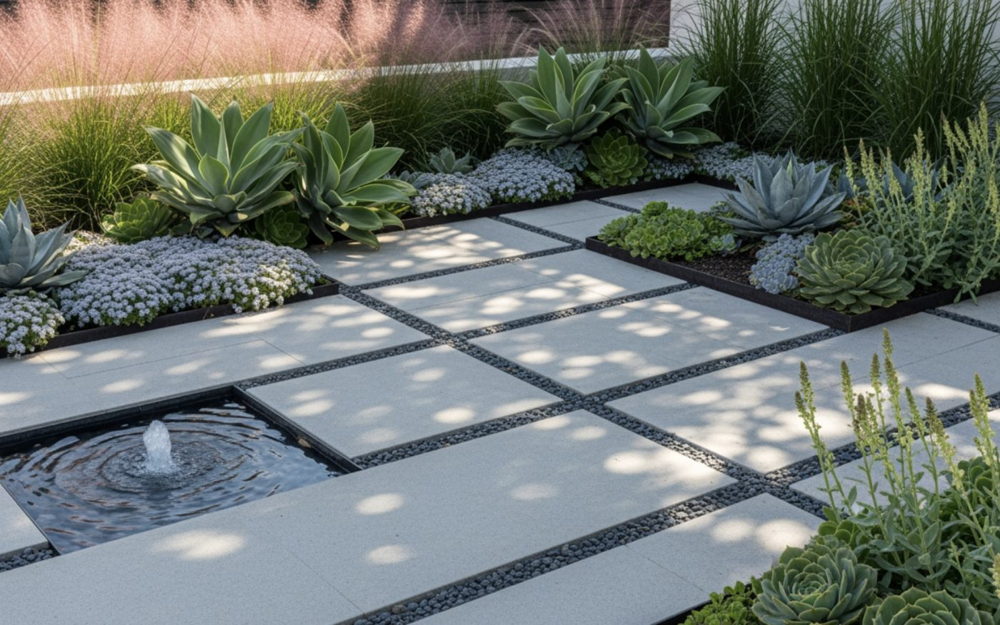 | land-succulents.jpg | Landscape page — gallery photo 2 (paver garden) | wide, ~1400px |
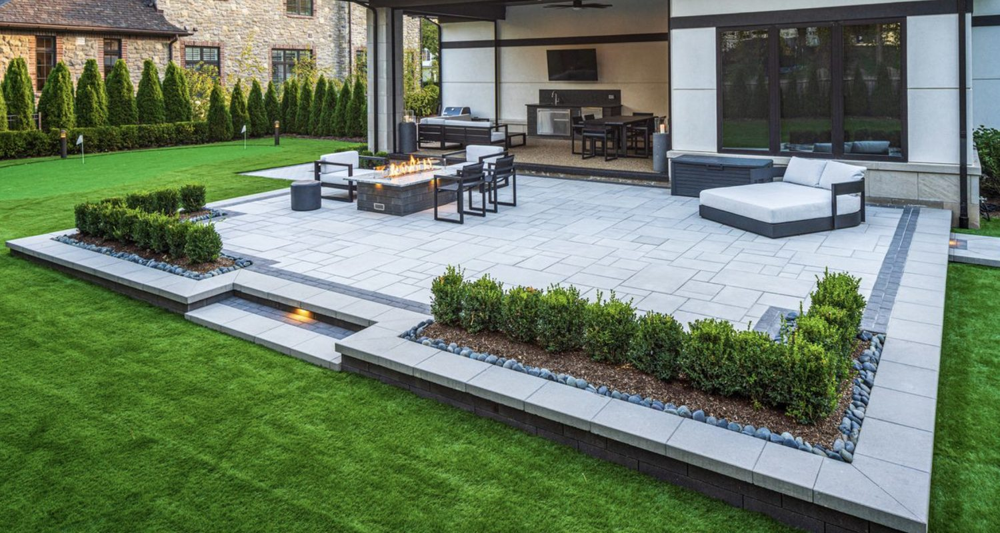 | land-patio.jpg | Landscape page — gallery photo 3 (patio & fire pit) | wide, ~1500px |
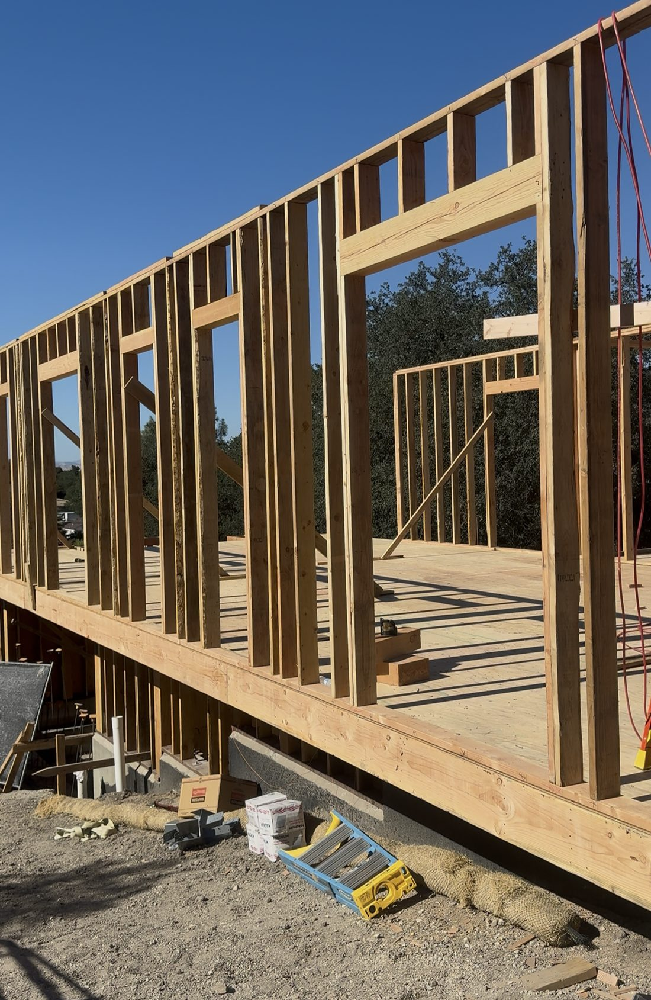 | paso-framing.jpg | Portfolio — Paso Robles album cover | any, ~1100px |
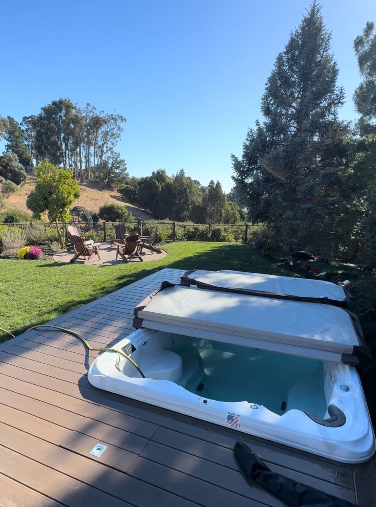 | fremont-backyard.jpg | Portfolio — Fremont Backyard album cover | any, ~1100px |
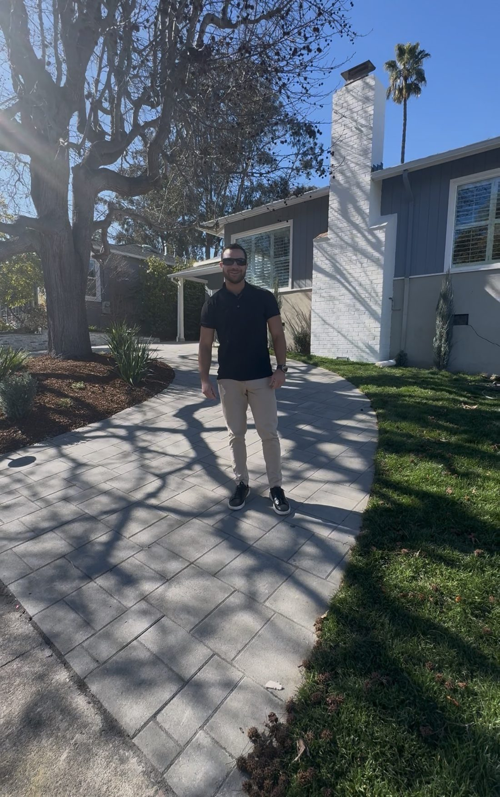 | adu-sunnyvale.jpg | ADU Builder Sunnyvale page | any, ~1100px |
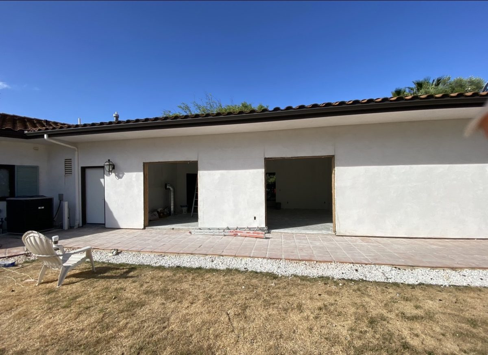 | addition-progress.jpg | Home Additions Los Gatos page | any, ~1200px |
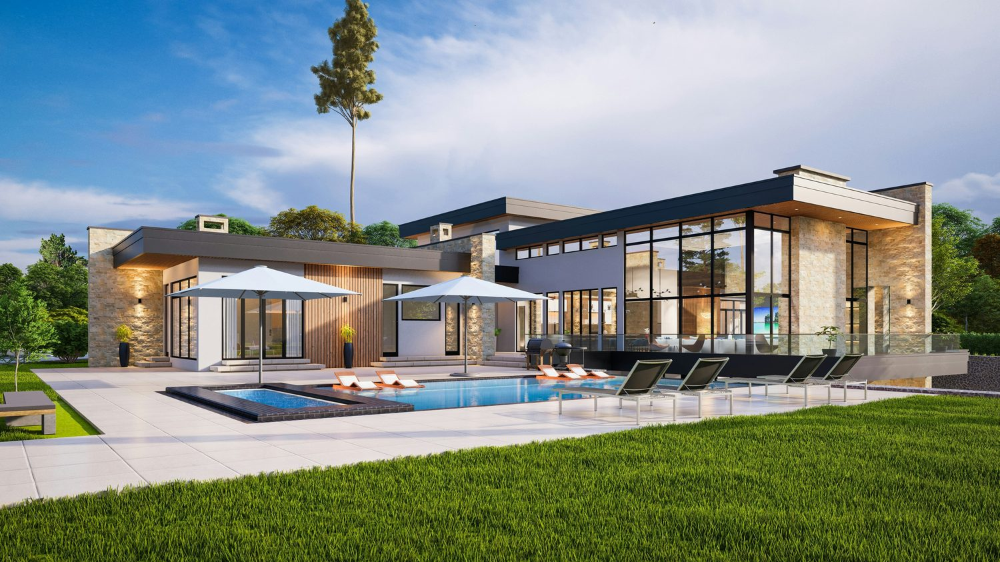 | custom-home.jpg | Custom Home Builder Paso Robles page + mood board #5 | wide, ~1500px |
Still-empty spots
Two spots show an empty beige box: the Commercial page showcase and the Wine Room album cover on the Portfolio page. Send those photos to Claude and it will wire them in as named files like the ones above.
Portfolio album photos
The albums are clickable now. Their photos are also simple files — replace them the same way:
| Filename | Where |
|---|
paso-framing.jpg | Paso Robles album cover |
album-paso-1.jpg … album-paso-5.jpg | The 5 photos inside the Paso Robles album |
fremont-backyard.jpg | Fremont album cover |
album-fremont-1.jpg … album-fremont-4.jpg | The 4 photos inside the Fremont album |
album-wine-1.jpg … album-wine-6.jpg | Wine Room album — add these files and tell Claude to wire them in (or just add them and ask) |
Tips
Use .jpg photos under 1 MB when possible (phone photos are fine — just not 20 MB originals; they slow the site). Keep the same orientation as the photo you replace (wide stays wide, portrait stays portrait). If something breaks, re-drag the folder — and every deploy can be rolled back from Netlify's Deploys tab.